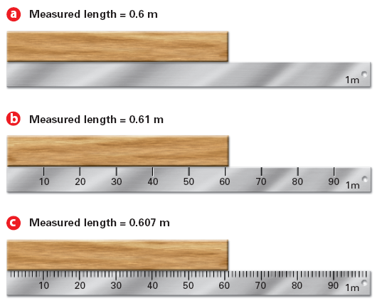

Chemistry and Physics
Mr. Nau
Precision
refers to the closeness of
two or more measurements to each other.
Accuracy
refers to the closeness of a measured value to a standard or
known value.
Significant Figures are the significant digits reported following a measurement or calculation.
For the following reasons,
all measurements are inherently inaccurate:
Therefore, reported values obtained from measurements must convey precision and the degree of uncertainty.
Often times in sports, the difference between a win and a loss is determined within a hundredth of a second.
Significant figures include all of the digits in a measurment that are known precisely, plus one last digit that is considered an estimation.
Non-zeros are always significant.
103.23002
103.23002
Therefore, the following rules are used to determine whether or not a zero should be counted as significant.
All trailing zeros after a decimal point are significant
12.740
All five numbers are significant
0.00420
Three sig figs, 4, 2 and 0
2500
These zeros are not significant! (no decimal = low precision)
Zeros between two other significant digits are also significant
Zeros used only for spacing the decimal point are not significant.
0.000023
Only the last two digits in this example are significant
"A chain is no stronger than its weakest link"
An answer is no more precise than the least precise number used to get the answer...
Your answer cannot be MORE precise than the least precise measurement.
The number of digits after the decimal point in the sum or difference of two or more measurements cannot be greater than that of the measurement with the fewest digits after its decimal point.
Example: 25.0 + 1 = 26
Although 25.0 is reported to the first decimal point, 1 contains no decimal and therefore the final answer must also be reported without a decimal.
The number of significant figures in the product or quotient of two or more measurements cannot be greater than that of the measurement with the fewest significant figures.
Example: 25.0 x 1.0 = 25
Although 25.0 contains three significant figures, 1.0 only contains two. Therefore the final answer must also contain just two significant figures.